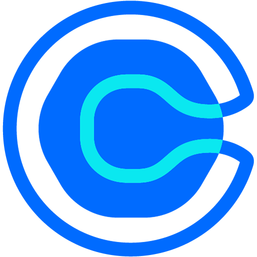
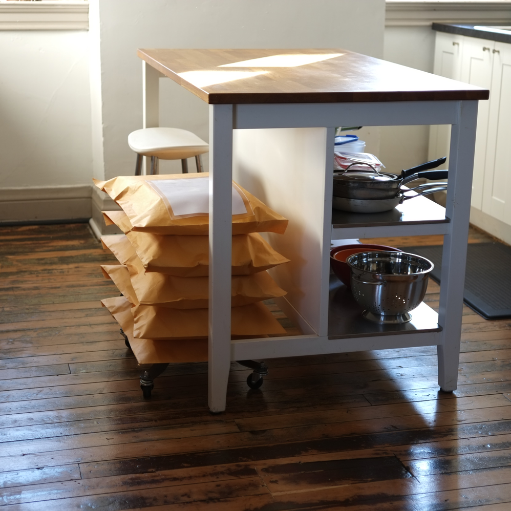
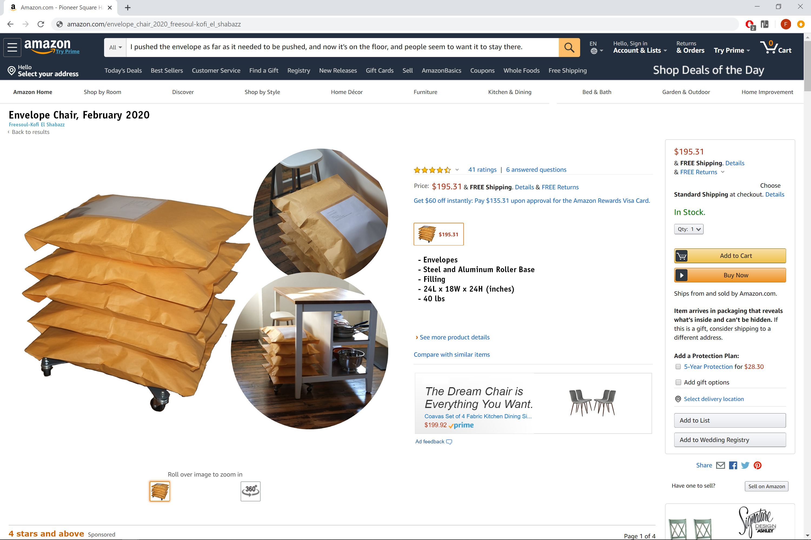
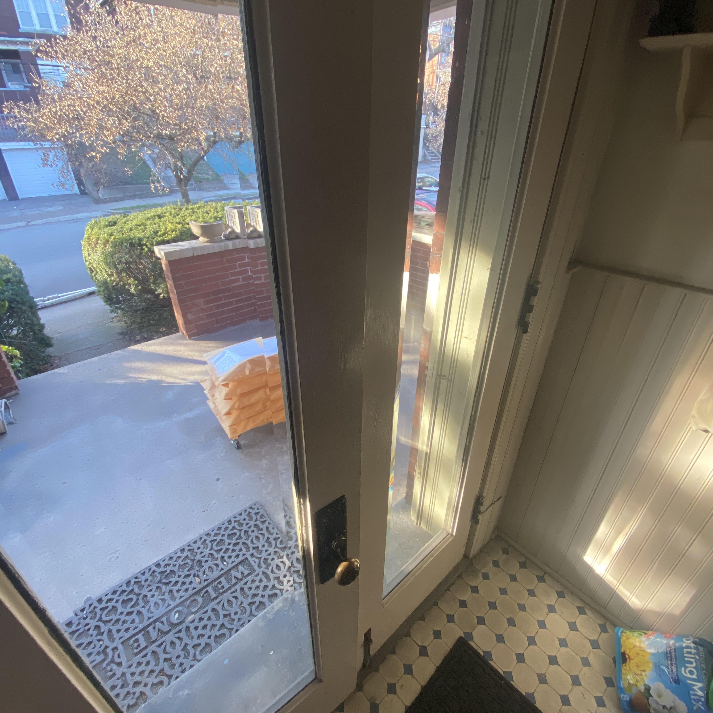
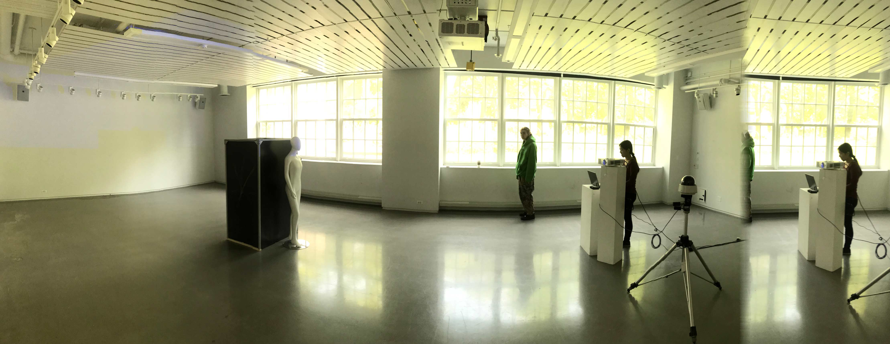
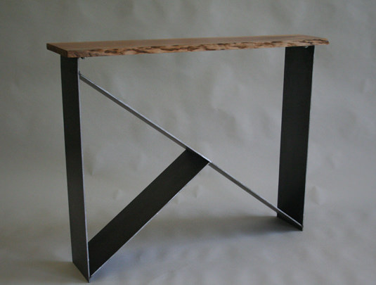

Yo, I'm Sol (he/him). Right now, I'm working as a ux researcher, designer, and artist. I'm invested in social design; developing artifacts and experiences to connect; challenging unsustainable and inequitable practices and beliefs by design.
- Undergraduate Design & Engineering Portfolio (2020) | Available upon request
- Resume | Available upon request
- Undergraduate Art Portfolio (2020) | Available upon request
- Current work | Schedule 
A Shadow Field in America, 2020
Acrylic on canvas, ink on paper, red pin
38 x 38 inches
A Shadow Field in America-Alternative

The Envelope Chair, 2020
Envelopes, Steel and Aluminum base, Filling
24L x 18W x 24H inches, 40lbs

The Envelope Chair-Detail
The Envelope Chair-Amazon
The Envelope Chair-Arrival

Untitled (with Nelly Lin), 2019
androgynous mannequin, projector, computer + softwares,
security camera + router, tripod, concealed microphone + speaker,
extruded aluminum structural materials, mirror panes, polycarbonate panes
approximately 320 sq. ft.
Untitled (with Nelly Lin)-Alternative

Untitled (with Nelly Lin)-Alternative, Detail
Our sculpture establishes several bodies in conversation with
the guests who enter the space. The security camera is mounted
on a tripod with focus on the entrance of the gallery, it is the
first object guests see. Cords run from the camera to the router,
and more cords connect the router to the computer. The projector
is connected to the computer. The mannequin stands several feet
away from the security camera, cords, router, and computer. Behind
the mannequin stands a open-top box. In the box, the wall
closest to the back of the mannequin, as well
as the adjacent side walls, are mirrored. The fourth wall, furthest
from the mannequin, affords examination of the inside of the box
via a head-shaped hole cut in a pane of opaque material.
Projection mapping software was used to project on to the head of
the mannequin.
As guests enter the space the camera appears to record their
faces and project those images on to the face of the mannequin.
Upon closer examination, guests find their faces distorted and
intermingled with the faces of other guests in the space.
A concealed microphone and speaker distort the voices of the guests
based on their proximity to the mannequin, giving presense to the
mannequin body.
We created two modes of feeling, 1) the self as many and 2) many as self.
Our work does this by presenting our guests with two presentations of themselves.
The first, what appears to be their own features on an unidentifiable figure (the mannequin).
The second, the infinite population of mirrored selves produced when examining the inside
of the box. In this, we give physical presense to our societies relationships with
transparency, privacy, and surveillance.
Untitled (with Nelly Lin)-Text

Balance, 2018
Balloon x3, string, hammer & chisel
"subtle bodies being in suspense" Henry Corbin, Mundus Imaginalis

Balance-Notes

40.441268, -80.007851 (The Point), 2016
Found glass shards, ceramic face by unidentified artist,
soil from 40.461520, -79.929146

Room Screens, 2014
Steel, aluminum, cherry, walnut (found in Newtown, PA)

Room Screens-Notes

Hall Table, 2013
Steel, Cherry (found in Newtown, PA)

Hall Table-Notes